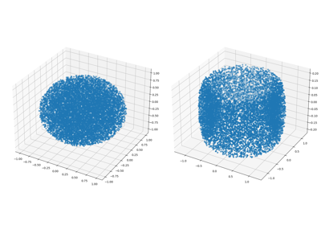

Examples¶
Below is a list of examples for various workflows using the MultiScaleOT library from python. A convenient way to try them is via Google colab.


Below is a list of examples for various workflows using the MultiScaleOT library from python. A convenient way to try them is via Google colab.